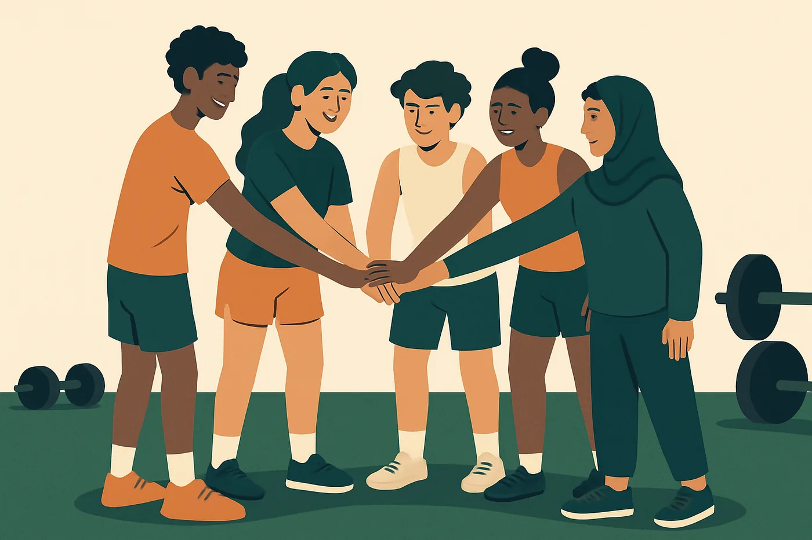
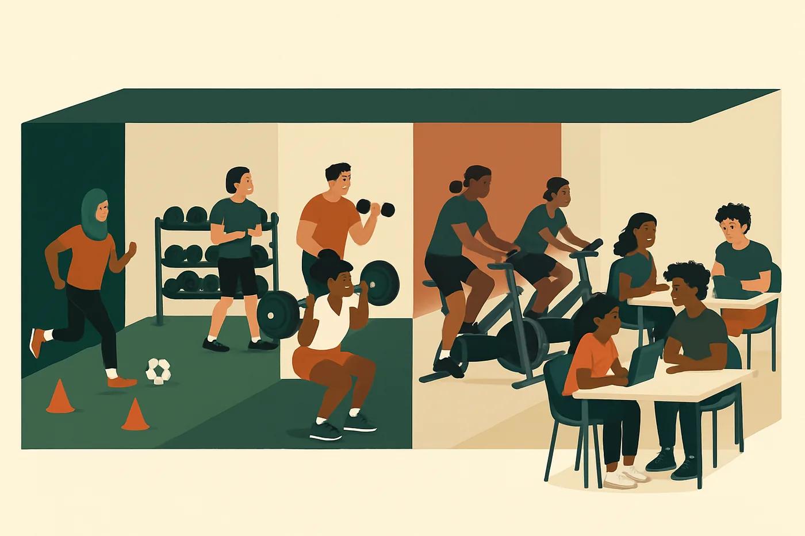
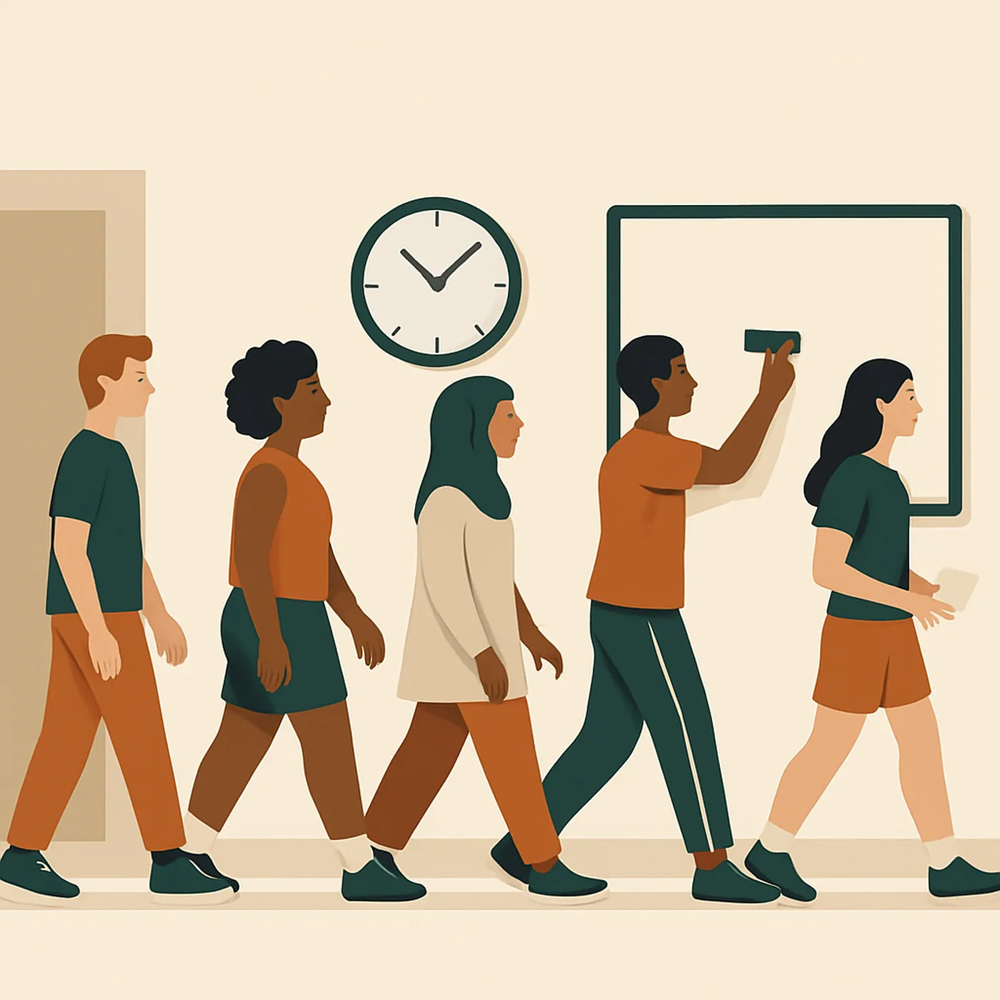
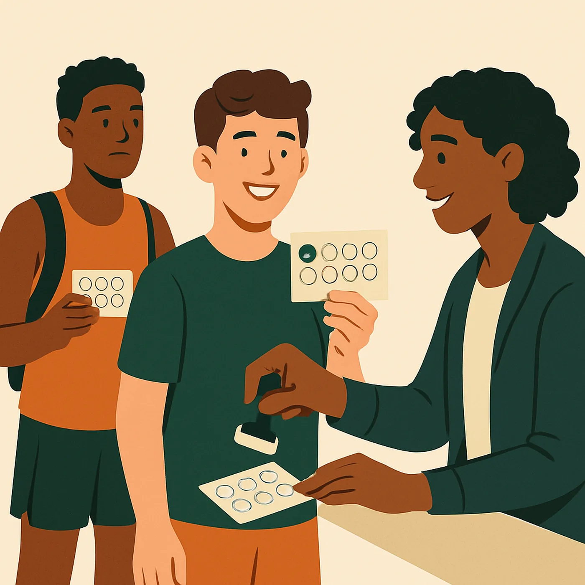
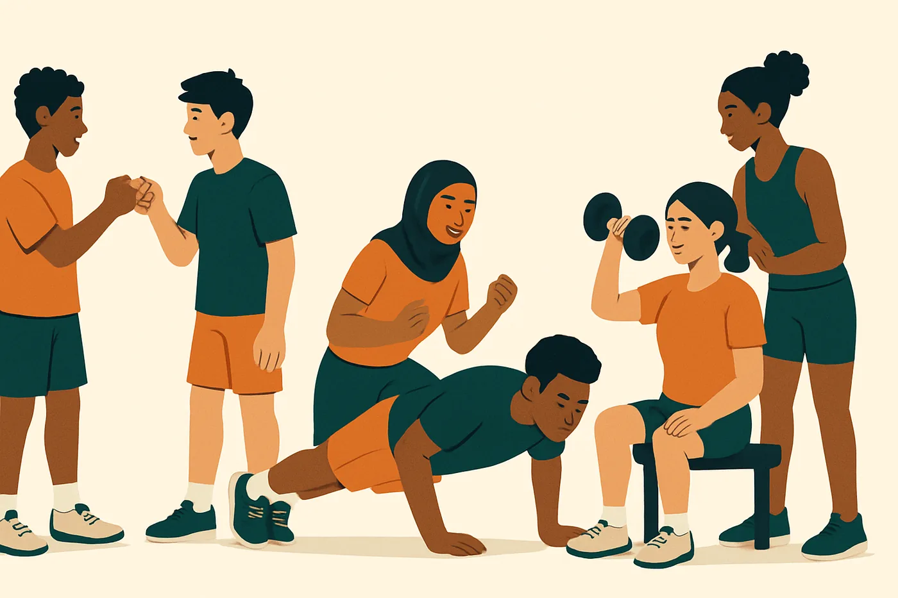
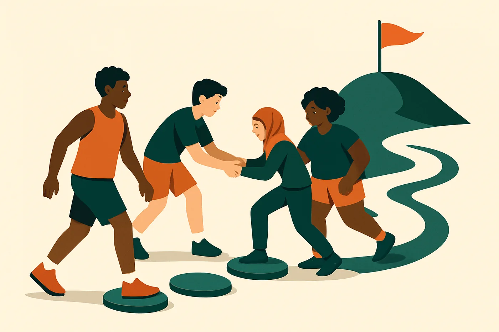
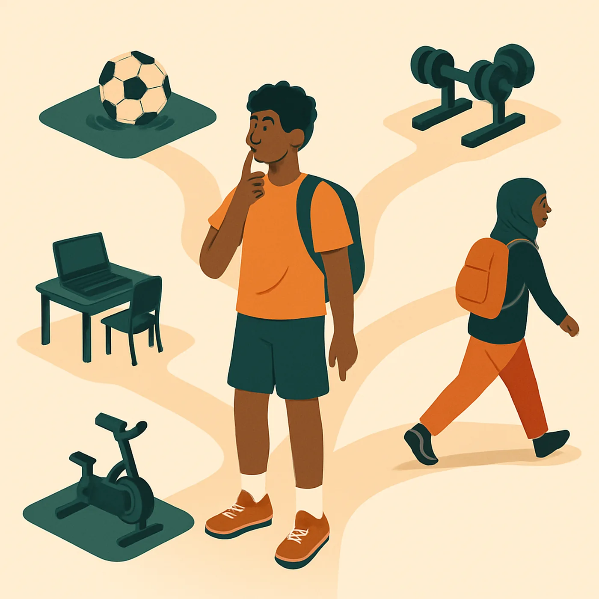

This is not traditional PE.
There is no competition ranking, no forced fitness testing, and no grading based on how fast, strong, or athletic you are. Students learn to take care of their bodies for life. They choose where they work, set their own fitness goals, and get more than one chance to show what they can do.

What students do
Every class has two work blocks. Block 1 is the Feature, the unit we are learning, taught by Mr. English. Block 2 is the Anchors: weight room, bikes and rower, or laptops for a health lesson. Students sign up for the space they want, with a floor so nobody skips the parts that matter.
What families need to know
- Sneakers that tie, clothes you can move in, a water bottle.
- Forgot something? We have loaner sneakers and water. Not a reason to sit out.
- Missed a class? Make-up work is in Google Classroom and skill checks can be redone.
- Questions: zacharyjenglish@gmail.com. Best way to reach me is email. Office hours Tuesdays, 8:00 to 8:30 AM, before school.
How this course is built
Aligned to the Boston Public Schools PE Framework, the Massachusetts 2023 Health and PE Framework, the SHAPE America 2024 national PE standards, and the WIDA standards for students learning English. Grades measure what a student can do and know. See Standards and Design.

Where we move
- Room 006, the weight room. Home base. Dumbbells, barbells, cable machine, and this year's new lat pulldown, EZ curl bar, rowing machine, and glute bike.
- Mini gym. Green turf. Games, skills, yoga, dance, badminton, volleyball, the putting course.
- Cardio suite. Bikes, treadmills, the rower, and the laptops for health lessons.
- Outside. Two basketball courts and the tennis courts right outside the PE office. Boston Common for walking routes and the chipping green when the weather allows.
For the Fenway community. This course teaches teenagers how to train safely, set a goal and track it, handle stress, and find an activity they will keep doing after graduation. Work Hard. Be Yourself. Do the Right Thing.
How class works
PE meets once a week for 45 minutes. Students rotate through PE by quarter, about nine classes each. In those nine classes every student learns the norms and the spaces, sets a fitness goal from a baseline, trains in the weight room and cardio suite every class, learns the featured activity, and finishes with a personal activity plan.
The Feature and the Anchors
The Feature is the unit. It lives in the mini gym, or outside when the weather allows. Mr. English teaches there directly. It changes every 3 to 5 weeks.
The Anchors are the weight room, the bikes and rower, and the laptops. They are open every class as a real option. Their focus changes each unit so they connect to the Feature. In the strength unit the rooms swap jobs: the weight room becomes the Feature and the mini gym becomes an Anchor for recovery and light games.
Inside or outside. When a unit has both, students choose. Option A is outside: the courts, the field, Boston Common. Option B is the mini gym. Students pick based on weather, comfort, or daily mood. Both are fully taught. Neither is the easy version.

Choice with a floor: the punch card

Students choose their Block 2 space on the sign-up board. The floor keeps the choice honest. Over a unit every student completes at least:
- 4 Feature blocks (2 for once-a-week sections)
- 2 fitness blocks in the weight room or cardio suite (1 for once-a-week)
- 1 laptop block for the health lesson
- 1 free block, any space
Board caps: weight room 8, bikes and rower 5, laptops 6. The Feature takes everyone else. Launch days and skill-check days keep the whole class in the Feature.
You don't get to pick your favorite space and skip the others. Each one teaches something different.
Three norms: Respect. Effort. Safety.
Students write and sign the community agreement in the first weeks. The norms cover every space, inside and out.
- Respect. Your own body (no negative self-talk). Others' bodies (no comments about appearance, strength, or ability). The space and the equipment (return it, re-rack it, help others).
- Effort. Show up ready to move. Try new things, even when they feel uncomfortable at first. Give feedback kindly and specifically: "I noticed your form improved."
- Safety. Ask first. Closed-toe shoes. Clear floor. Re-rack everything. Never lift alone.
Underneath the three: honesty in every reflection, and room for every fitness level, body type, and ability. No one gets excluded from PE. We find a way.

Earned independence and student roles
Nobody lifts with weight until they finish the safety check-off in the first weeks: squat, hinge, push, pull, how to spot, bike and rower setup, laptop login. A green check on the wall chart means the student can sign up for the weight room. Everyone else works the bodyweight card until they earn it.
From the second week on, students run parts of the class from cards: warm-up leader, equipment, timekeeper, circle leader. The opener and closing run without the teacher. That is on purpose.
The syllabus in one page
- When: once a week, 45 minutes, room 006 (the weight room), then wherever the Feature lives that day. Boston Public Schools requires at least one semester of PE each year in grades 9 to 12 for graduation credit, with at least half of class time in moderate to vigorous movement.
- What it is: not about being the fastest or the strongest. Learning to take care of your body for life.
- The year: cooperative games and Boston Common walking in the fall, soccer and futsal, strength and power in the winter, badminton, volleyball and golf, yoga and mindfulness, dance in the spring, basketball, then student choice in June.
- Grades: Skills 35%, Knowledge 25%, Fitness Goal 20%, Personal Responsibility 20%. Scores are 1 to 4. Any 1 or 2 can be redone after practice, and the new score replaces the old one.
- Not in the grade: being late, what you wear, behavior. Those are handled separately.
- Bring: sneakers that tie, clothes you can move in, water. Layers for outdoor units.
- Homework: none required. Tracking your activity outside class is optional and helps.
- Contact: zacharyjenglish@gmail.com. Email is best. Office hours Tuesdays, 8:00 to 8:30 AM, before school.
PE 1 syllabus (Word, 55 KB) PE 2 syllabus (Word, 53 KB) One page, English and Spanish (Word, 48 KB)
What is featured when
The Feature changes by season. Your section learns whichever Feature is running during its rotation, plus the Anchors every class. The four project titles are the year's themes. Every student finishes their rotation with a personal activity plan.

| Qtr | Unit | Dates | Feature and space | Project theme |
|---|---|---|---|---|
| Q1 | 1. Foundations: norms, stations, community | Sept 8 to Oct 9 | Cooperative games. Mini gym and outside | My Baseline and My Goal |
| Q1 | 2. Fitness planning and urban walking | Oct 13 to Nov 6 | Walking routes and pacing. Boston Common | |
| Q2 | 3. Soccer and futsal | Nov 9 to Dec 11 | Outside, then futsal in the mini gym | My 4-Week Training Program |
| Q2 | 4. Strength and power | Dec 14 to Jan 22 | Weight room is the Feature | |
| Q3 | 5. Net and target games: badminton, volleyball, golf | Jan 25 to Feb 26 | Mini gym, putting course, chipping station | My Stress Toolkit |
| Q3 | 6. Yoga, mobility, and mindfulness | Mar 1 to Apr 2 | Mat work. Mini gym, lights low | |
| Q4 | 7. Dance and creative movement | Apr 5 to Apr 30 | Mini gym with music. Outside when warm | My Lifelong Activity Plan |
| Q4 | 8. Basketball | May 3 to May 28 | Outside courts. Mini gym hoop as backup | |
| Q4 | 9. Student choice and capstone | June 1 to June 21 | Any space. Tennis courts and golf gear open |
Unit overviews
Each unit: what students will be able to do, what the Anchors focus on, and sample lesson goals. Standards are listed on the Standards and Design tab.
Unit 1. Foundations: norms, stations, community
Big questions: What does every person in this room need to be safe, included, and able to grow? How do we share five spaces and one teacher?
I can: explain and follow our three norms in every space. Use the weight room, bikes, and laptops safely on my own. Design and teach a cooperative game with my group.
Anchors: weight room tour, rules, and safety check-off (bodyweight squat, hinge, push, pull, spotting). Bike and rower setup, 10 easy minutes, the 1 to 10 effort scale. Laptops: Google Classroom login, wellness inventory, group norms lesson.
Lesson goals:
- I can name our three norms and say what each one looks like.
- I can help write our community agreement and give an example of each norm.
- I can name the weight room rules and show a safe bodyweight squat and hinge.
- I can rotate on the timer, clean up my space, and log what I did.
- I can teach a cooperative game with my group, and I can choose a space and follow through.
Games: Group Juggle, Human Knot, Helium Hoop, Cross the River, Minefield, Everybody's It. Evidence: bodyweight form check, norms and safety picture quiz, first log entries, group game self-rating.
At home: Ask your student to teach you the three norms and what each one looks like at home.
Unit 2. Fitness planning and urban walking
Big questions: What does fitness mean for me? How do I know my training is working?
I can: measure my heart rate and effort and hold a target pace. Read my baseline data and write a SMART goal with a 4-week plan. Stay safe being active outside in any weather.
Anchors: baseline tests and a beginner full-body circuit. 10-minute bike or rower distance baseline, heart rate zones. Laptops: FITT and SMART goals, build the baseline data table.
Lesson goals:
- Launch: walk the first Common route, take a pulse, rate effort, baseline tests begin.
- I can walk at three paces and use the talk test to tell them apart.
- I can read my baseline data and write one SMART goal.
- Skill check: hold a target pace on a set route. Project due: My Baseline and My Goal.
Three timed routes on Boston Common (short, medium, long), lead and sweep vests, weather cards. Words: pulse, beats per minute, pace, zone, baseline, FITT, layers.
At home: Take a 20-minute walk together and have your student show you how to count a pulse.
Unit 3. Soccer and futsal
Big questions: How does where I stand change what my team can do? How do we handle conflict in a game?
I can: pass, control, and move in small-sided games. Design and test a team tactic and explain what worked. Handle conflict and play fair. Choose food and drinks that help me play.
Anchors: single-leg strength, stopping and cutting, core. Bike and rower match intervals, 30 seconds hard, 30 easy. Laptops: fueling and hydration for play, one tactics video with a response.
Lesson goals:
- I can control the ball with my first touch and pass to my partner's feet.
- I can move to open space after I pass.
- I can tell fair play from foul play and use a conflict huddle.
- I can help design a tactic and say if it worked.
- I can pass, control, and move in a game, and I can name what my team did well.
Starts outside, moves to futsal in the mini gym when it gets cold. Call words taught as vocabulary: "time", "man on", "switch", "mine".
At home: Ask what "move to open space" means. Watch a match together and spot it.
Unit 4. Strength and power
Big questions: How do I get stronger safely? Who is selling me something, and is it true?
I can: perform five lift patterns with safe form. Write and follow a 4-week program using overload and progression. Check whether a supplement or energy drink claim is true.
The rooms swap. The weight room and functional area are the Feature. The mini gym is the Anchor for mobility, cornhole, putting, and light games. Bikes and rower run easy recovery sessions. Laptops: muscles, sleep, and recovery. Read a supplement label, check the claim.
Lesson goals:
- I can show the five lift patterns (squat, hinge, push, pull, carry) and write my program.
- I can follow and log my program and coach my partner.
- I can restart my program safely and spot and coach my partner.
- I can land a jump safely, and I can check a claim on a label.
- I can show safe form on two lifts and report my results. Project due: My 4-Week Training Program.
This is where the lat pulldown, EZ curl bar, and glute bike get their full introduction. See the Fitness Center tab.
At home: Ask to see the program. Read a supplement or energy drink label together and check one claim.
Unit 5. Net and target games: badminton, volleyball, golf
Big questions: How do I practice so that I actually get better? What do I do with pressure?
I can: serve and rally with control. Chip and putt to a target with a repeatable setup. Give and use specific feedback. Use a practice plan and a growth mindset under pressure.
Anchors: shoulders, rotation, grip, side-to-side movement. Bike and rower rally sprints, 10 seconds fast, 50 easy. Laptops: competition, pressure, and self-talk. Chart your own accuracy data.
Lesson goals:
- I can hold the racket with a handshake grip and serve underhand to my partner.
- I can hit a clear and a drop, and I can give my partner one specific piece of feedback.
- I can set up a putt and a chip the same way every time and record my score out of 10.
- I can bump, set, and serve a volleyball over the net in a cooperative rally.
- I can move my opponent and set a growth goal for each match.
- I can serve and rally with control, and I can explain what my data shows.
The mini gym is small: pairs rotate on a 3-minute timer. Badminton and volleyball share the net; the putting course and cornhole run along the side wall. Full details on the Golf and Games tab.
At home: Play catch, cornhole, or putt into a cup at home. Ask "aim or power?" after a miss.
Unit 6. Yoga, mobility, and mindfulness
Big questions: What helps me manage stress? How does my body feel when it is calm?
I can: hold a short flow with alignment and pick the right kind of stretch. Use at least three stress strategies and write my own plan. Teach a 3-minute routine to a small group.
Anchors: slow tempo lifts, balance, light loaded mobility. Steady ride or row with a breathing focus. Laptops: stress, sleep, breathing. Draft the toolkit.
Lesson goals:
- I can follow the quiet-space norms and breathe slowly for one minute.
- I can move through a 5-pose flow with my breath, and I can say when to use each kind of stretch.
- I can try five stress strategies and rate how each one works for me.
- I can build my own 3-minute routine and teach it to a partner.
- I can hold a flow with alignment and teach my routine to a small group. Project due: My Stress Toolkit.
At home: Ask your student to teach you their 3-minute routine. Try it before bed.
Unit 7. Dance and creative movement
Big question: What does the way I move say about me and where I come from?
I can: perform a dance form. Create and perform a 32-count sequence with my group. Explain what a dance means in a culture and how media shape body image.
Anchors: power and rhythm: med ball throws, kettlebell swings, jump and land. Ride to the beat. Laptops: movement, culture, body image.
Lesson goals:
- I can keep the beat and dance a line dance with the count.
- I can build a sequence with the five elements, and I can say how media shape body image.
- I can perform our sequence with my group and give kind, specific feedback.
Students bring music and dances from home. Performing can be for the class or on video for the teacher only. The student chooses.
At home: Share a dance or song from your family. Your student may bring it to class.
Unit 8. Basketball
Big questions: How do I lead a team? Where can I play in my city, and who gets to play there?
I can: apply offense and defense tactics in a game. Lead a team as captain or coach. Make a claim with evidence about places to play in Boston.
Anchors: jumping, landing safely, plyo boxes. Fast-break intervals, 15 seconds hard, 45 easy, and the 10-minute retest. Laptops: injury prevention, research places to play in Boston.
Lesson goals:
- I can dribble, pass, and shoot with control, and I know my baseline.
- I can make space and use a give-and-go, and I can do my role from the script.
- I can defend with my team, and I can design and test a play.
- I can use tactics in a game, and I can make a claim about places to play and back it up.
Role cards: captain, coach, scorekeeper. Outside courts, mini gym hoop as backup.
At home: Ask where the nearest court or community center is and whether it feels open to everyone.
Unit 9. Student choice and capstone
Big question: What will I actually do to stay active after this class ends?
I can: carry out my own activity plan. Compare my September and June data. Present my lifelong activity plan.
Lesson goals:
- I can choose an activity that fits me and write a 3-week plan for it.
- I can carry out my plan, and I can compare my baseline and final data.
- I can present my lifelong activity plan and explain my choices with my own data.
Tennis courts open. Golf gear, badminton, volleyball, and basketball all available. Presentation template with sentence starters; option to present to a small group.
At home: Ask to hear the plan. Ask what changed between the first numbers and the last.
PE 2: choose your elective
The five PE 2 electives
PE 2 (grades 10 to 12) runs on the same frame at a higher level. Students write their own Anchor cards, lead warm-ups, and the Feature follows their elective. Choose by the end of the first unit.
- Strength and Conditioning. The weight room is the Feature all year. Squat and deadlift progressions, pushing, pulling, power, programming, recovery.
- Lifetime Fitness Games. Basketball, soccer and futsal, net games (badminton, volleyball, pickleball, tennis), golf, tournament design, coaching a sport.
- Yoga and Wellness. Vinyasa, yin, breathwork, sleep science, nutrition, leading a class.
- Urban Movement and Exploration. Running, pace and intervals, Boston route mapping, parkour basics, race prep.
- Student-Designed Program. Define a goal and metrics with the teacher, run it for eight weeks, track it, reflect.
All electives share the inside and outside choice, the Anchors, the same grading, and the right to reassess.

The fitness center
Room 006 and the cardio suite are open every class as an Anchor. Students who finish the safety check-off train on their own card while Mr. English circulates. This year we added a rowing machine, a lat pulldown, an EZ curl bar with Olympic plates, new dumbbells, and a glute bike.
What is in the room
| Space | Equipment | Used for |
|---|---|---|
| Weight room (006) | Dumbbells 5 to 45 lb, kettlebells, medicine balls, barbell with rack and safety bars, plate set, adjustable bench, cable machine, bands, suspension straps, pull-up bar, mirror, form posters. New: lat pulldown, EZ curl bar, Olympic plate set, rubber dumbbells, glute bike. | Self-guided strength circuits. The Feature during the strength unit. |
| Functional area | Rig with pull-up bars and dip attachment, wall balls, slam balls, plyo boxes (12, 18, 24 in), jump mats, turf. | Power, jumping and landing, carries. |
| Cardio suite | Stationary bikes, treadmills, elliptical, new magnetic rowing machine with 16 resistance levels, fans, laptops for health lessons. | Baselines, intervals, steady work, the health lesson station. |
| Mini gym | Green turf, badminton and volleyball net, basketball hoop, cornhole, futsal balls, cones, yoga mats, putting course. | The Feature most of the year. |
| Outside | Two basketball courts, tennis courts, pop-up canopy for shade, chipping green and practice balls. | Outdoor units and the chipping station. |
New this year: how we use each piece
Rowing machine
Full-body cardio that is easy on the joints. Order every stroke: legs, body, arms on the drive, then arms, body, legs on the way back. Flat back, chest tall, handle level with the lower ribs.
Students start on resistance level 3 to 5 (higher is heavier per stroke, not better) at a slow rate, about 20 to 24 strokes a minute. The "spicy" card is 10 minutes of intervals: 30 seconds hard, 30 easy.
Cue card: Legs, body, arms. Arms, body, legs. Flat wrists. Straps snug over the ball of the foot. Handle back on the hook, never dropped.
Lat pulldown
The pull pattern with real load. Thighs locked under the pad, hands just wider than shoulders, pull the bar to the top of the chest and lead with the elbows. No leaning way back, no bar behind the neck. Controlled up, controlled down.
Start with a weight you can pull 10 times with clean form. Lean back a little, never more than about 30 degrees, and hold that angle. The pin goes back where it started. Only checked-off students use it with the stack; everyone else learns on band rows first.
Cue card: Chest up, shoulders down, bar to collarbone, slow up.
EZ curl bar and Olympic plates
The angled bar keeps wrists neutral for curls, skull crushers, and upright rows. Collars on every time, plates loaded evenly, the bar racked when done.
Students learn arm work as an add-on after the five patterns, never instead of them. Start with the bare bar. Curl to shoulder height, squeeze, and lower for a slow three count.
Cue card: Elbows glued, no swing, slow down. Collars on. Rack it, never lean it on a wall.
Glute bike
A hip-drive machine that trains the glutes and hamstrings without loading the spine. Back flat against the pad, feet flat, push through the heels to full hip extension, squeeze at the top, and lower under control.
Good for students recovering from knee or back issues who still want to train the lower body. Set the pad and belt before the first rep. Start with the empty sled and add weight only after 10 clean reps.
Cue card: Heels down. Ribs down. Hips all the way up, squeeze and tuck at the top. Lower slow.
Safety rules and the check-off
Five rules on the wall. They are not negotiable. A student who does not follow form, spotting, or equipment rules pauses weightlifting until they review safety with Mr. English.
- Ask first. New machine, new weight, new exercise: ask before you try it.
- Closed-toe shoes. No shoes, no weight room.
- Clear floor. Bags, bottles, and phones stay off the turf.
- Re-rack everything. Plates, dumbbells, pins, handles.
- Never lift alone. Spotter script: "I am ready to spot. Are you ready to lift?"
The safety check-off comes before any weight. Students show a bodyweight squat, a hinge, a push (incline push-up), a pull (band row), how to spot, bike and rower setup (seat at hip height, feet strapped), and laptop login. A green check on the wall chart opens the weight room sign-up. Max 8 students lifting at a time; the rest are on cardio or the bodyweight card. No food in the gym. Phones stay in the holder except for music on a bike. Injury: tell Mr. English immediately. First aid kit is by the door.
The circuit cards
Bodyweight card (everyone)
Squats, push-ups, plank, lunges. 3 rounds, 1 minute rest between rounds. Write the reps on your log.
Full-body card (checked-off)
Squat, bench or push, row or lat pulldown, hinge, carry. 3 rounds. Write the weight and reps for every set. Progress when every set is clean.
Cardio card
Bike, rower, or treadmill. 10 to 15 minutes steady. Rate your effort 1 to 10 and your mood. Baseline: how far in 10 minutes.
Spicy card
Rower or bike intervals. 30 seconds hard, 30 seconds easy, 10 minutes. Only after two steady sessions.
Progression on every card: bodyweight, then dumbbells, then barbells. The log is the evidence for the Fitness Goal part of the grade.
Thank you to our donors
Much of the new equipment came through DonorsChoose projects funded by families, alumni, and strangers who believe teenagers deserve a real place to train: Gearing Up for Greatness: Strength Training Starts Here, Fuel for Learning: Healthy Snacks and Options for Healthy Students, and Balanced Nutrition, One Bar at a Time. The rower, the EZ curl bar, the plates, the dumbbells, the fans, and the snack shelf are theirs. Thank you.
Golf and games
Lifetime games are games you can still play at 60. Golf, badminton, volleyball, pickleball, basketball, and cornhole all live in this course. The focus is the same in every one: learn how to practice, give useful feedback, and handle pressure.
Golf: chipping and putting
New this year. We have a chipping green with practice balls for the short game and a set of mini golf holes, putters, and mats for the putting course in the mini gym. Nobody needs to have played before. Golf is a target game: the skill is a repeatable setup and a calm swing, and the data tells you if you are getting better.
Safety comes before the first club is handed out. One hitter per mat, everyone else behind the safety spot until the hitter is done. Nobody walks in front of a hitting line. Clubs stay below the waist when walking and no practice swings outside your mat. Foam or limited-flight balls only for chipping; real balls only on the putting course. Quiet while someone putts. Call "clear" before collecting. Students sign the golf safety sheet first.
Putting (mini gym)
- Setup: feet shoulder width, eyes over the ball, light grip, shoulders rock and wrists stay quiet.
- Progression: 3-foot putts to a cup, then 6 feet, then the mini golf holes with obstacles.
- Score card: putts to hole out, 9 holes. Track it across the unit.
Chipping (outside, or indoor mats)
- Setup: ball back in the stance, weight on the front foot, hands ahead, small swing, brush the mat.
- Progression: land the ball on a towel, then on the green, then inside a hoop.
- Score card: balls on the target out of 10.
Design a hole
- After a week on the course, groups design and build their own mini golf hole from cones, mats, boards, and recycled materials.
- The class plays every hole. Groups score par, fairness, and creativity, then revise.
- The station card asks the golfer's two questions on every miss: adjust aim, or adjust power?
Golf runs inside Unit 5, Net and Target Games (January to February). Golf is a target game under the same standards as cornhole, and the Massachusetts framework names it as a lifetime activity. It is open again in June for student choice and appears in the PE 2 Lifetime Fitness Games elective. Sample lesson goal: "I can set up a putt and a chip the same way every time and record my score out of 10."
Badminton
The net game that fits our mini gym. Handshake grip, legal underhand serve, rally, clear, drop, doubles. Pairs rotate on a 3-minute timer. Week 3 is a ladder tournament where every match has a growth goal, not just a score. Data card: longest rally count.
Feedback frame students use with each other: "I noticed ___. Next time try ___."
Volleyball
Shares the net with badminton in Unit 5. Ready position, forearm pass (bump), overhead pass (set), underhand serve. Cooperative rallies first: how many touches can the group keep going. Then small-sided 3v3 with a serve from wherever you can get it over. Seated volleyball is a full option, not a modification.
Basketball
Unit 8 in May on the outside courts, with the mini gym hoop as backup. Dribbling, passing, shooting baseline, then spacing, give-and-go, defense, and a team play students design and test. Students rotate through captain, coach, and scorekeeper from role cards. The laptop lesson researches places to play in Boston and who gets access to them. Knockout and 4 Square on sub days.
Pickleball, cornhole, and tennis
Cornhole runs along the side wall all through Unit 5 and as a recovery option in the strength unit. Accuracy card: bags on the board out of 8. Pickleball joins the net games when the paddles arrive. Tennis courts open in June for student choice.
How grades work
Your grade reflects what you can do and know, not how fast you are, how strong you are, or how hard you're trying (although effort is part of learning). Four parts, one piece of evidence each per unit.
| Part | Weight | What it measures | Evidence each unit |
|---|---|---|---|
| Motor Skills | 35% | Can you show the unit's main skill with control and proper form? | One skill check in the Feature, scored 1 to 4 |
| Knowledge | 25% | Do you understand the fitness, health, and strategy ideas of the unit? | One laptop lesson quiz or short written response |
| Fitness Goal | 20% | Did you set a personal goal and make measurable progress toward it? | Your training log against your goal |
| Personal Responsibility | 20% | Do you participate respectfully, engage fully, and reflect honestly? | Weekly 1 to 4 self-rating and an end-of-unit reflection |
The 1 to 4 scale
| Score | Level | What it looks like |
|---|---|---|
| 4 | Advanced | Skill is consistent and refined. Deep understanding. Exceeded the goal. Reflects thoughtfully. |
| 3 | Proficient | Skill with control. Shows understanding. Progress on the goal. Reflects clearly. |
| 2 | Developing | Emerging skill. Partial understanding. Minimal progress. Limited reflection. |
| 1 | Beginning | Minimal skill. Limited understanding. No progress yet. Sparse reflection. |
| Inc | Incomplete | Did not attempt the assessment. Schedule a make-up. |
Unit grade is the weighted average. Example: Motor 3, Knowledge 3, Fitness 3, Responsibility 4 gives 3.2 out of 4, a B. On the gym poster, 4 is an A, 3 a B, 2 a C, 1 a D.
Participation and personal responsibility
Participation is not a points column. It is the Personal Responsibility part of the grade, and it is scored on what the student does and says about their own work: the weekly self-rating on the norm of the day, and the end-of-unit reflection. A 4 means fully engaged every class, helps others, honest reflection. A 1 means minimal engagement and no ownership.
Students cannot skip the spaces they like less. The Feature, the weight room, the cardio suite, and the laptop lesson each teach something different. Students who cannot move on a given day still participate: they coach, keep score, do the laptop lesson, or write the reflection.
Goals: the SMART cycle
- Baseline. 10-minute bike or rower distance, a bodyweight circuit, flexibility, and the 1 to 10 effort scale. Recorded in week 1 or 2.
- One SMART goal. Specific, Measurable, Achievable, Relevant, Time-bound, with barriers, solutions, and who can help.
- Weekly check-in. Progress, on track or not, notes. The wellness tracker rates fitness, food, sleep, mood, and connection 1 to 5.
- Retest and reflect. Final numbers next to the baseline. What changed. What I learned.
Fitness Goal score: 4 for exceeding the goal or 15% or more progress with consistent tracking; 3 for reaching the goal or 5 to 15% progress; 2 for under 5% or spotty tracking; 1 for no tracking. Progress is (final minus baseline) divided by baseline.
Projects and the capstone
| Project | Season | What it contains |
|---|---|---|
| My Baseline and My Goal | Fall | Baseline data table, one SMART goal, a 4-week plan |
| My 4-Week Training Program | Winter | Design it, do it, report results with progression |
| My Stress Toolkit | Late winter | Personal stress plan, teach a 3-minute routine to a small group |
| My Lifelong Activity Plan (capstone) | Spring | Presentation comparing first and final data, plan for after the class ends |
Every student finishes their rotation with a personal activity plan: a goal, the FITT details (how often, how hard, how long, what type), a schedule, how it progresses, and how they will check it. Scored 1 to 4 on those five criteria, with a parallel rubric for students with IEPs, 504 plans, or newer English. Students may present to the class, to a small group, or on video. Families are invited to the June share.
Reassessment: you get another chance
You have the right to reassess if you score 1 or 2 on any component.
- You score a 1 or 2.
- You practice for 1 to 2 weeks with teacher feedback, peer coaching, or self-study.
- You ask for a reassessment.
- Your new score replaces the old one. Not averaged. Replaced.
Why? Competency is about mastery, not speed. If you weren't ready the first time, you get another chance after learning.
What is not graded
These do not touch the academic grade. They are handled through school systems and conversations, not grade penalties:
- Tardiness
- Dress code and uniform
- General behavior and compliance
- Participation points
- Effort self-ratings
Low grades are signals to me that you need help, not labels of who you are. If a grade drops below a B, Mr. English reaches out, asks what is in the way, offers specific support, and schedules a reassessment.
How you will know how you are doing
- Every 2 weeks: grade updated with new unit progress.
- End of each unit: full unit grade plus written feedback on what went well and what to focus on next.
- Anytime: email to set up a check-in.
For families
This page is for you. If transportation, equipment cost, or health issues get in the way, tell me. We'll problem-solve.
¿Prefiere leer en español? Use la función "Traducir" de su navegador (Chrome: clic derecho, "Traducir al español"). El resumen de una página está disponible en inglés y español más abajo. Otros idiomas a pedido.
Write to me in any language. Boston Public Schools also provides free interpretation for family meetings; ask the main office.
Syllabus and one-page summary
PE 1 syllabus (Word, 55 KB) PE 2 syllabus (Word, 53 KB) PE at a Glance, English and Spanish (Word, 48 KB)
The syllabus has a signature page. Please return it signed during the first weeks of your student's rotation.
How to reach Mr. English
- Email: zacharyjenglish@gmail.com. Replies within one school day.
- Office hours: Tuesdays, 8:00 to 8:30 AM, before school. Any other time, email me.
- Phone: Fenway High School main office, (617) 635-9911. They will get a message to me.
What you will hear from me: a monthly email on what we are learning and what to watch for at home, quarterly progress reports, and a call or email within 24 hours if a concern comes up.
What to bring, and what happens if you forget
- Comfortable clothes you can move in. Nothing fancy, just functional.
- Closed-toe athletic shoes. Required in the weight room.
- A water bottle.
- A layer or sweatshirt for outdoor units in cold weather.
- Openness to trying new things.
If you forget: we have loaner sneakers and water. Not a reason to sit out. We'll find a way for you to participate.
Absences and make-up work
One class a week means one absence is a whole week. Missing class doesn't mean missing learning.
- Document the absence with the main office.
- Let Mr. English know as soon as you can.
- Make-up work is in Google Classroom. Skill checks can be redone the next time the class meets, or at a scheduled make-up before or after school or at lunch.
Extended absence (2 weeks or more): talk to me as soon as you know and we will design a modified plan.
Access and accommodations
You have the right to alternative assessments and modified activities. No one gets excluded from PE. We find a way.
- IEP, 504, injury, chronic condition, temporary issue: tell Mr. English as soon as possible. Parallel activities on the same standards. Wall push-ups or band presses instead of floor push-ups. Wheelchair-specific movement and agility work. Swapped activities while an injury heals.
- Anxiety or a bad PE experience in the past: choose inside over outside, work with a friend, sit out one activity while doing another, talk with me privately about what helps.
- Cannot participate today: tell me before class starts. A nurse or doctor note covers longer periods. Students who cannot move still learn: they coach, keep score, do the laptop lesson, or write the reflection.
- Learning English: every lesson has pictures, short instructions, sentence frames, and a word bank. Students can draft in their home language first. Skill checks do not depend on English. Spanish materials are available and other languages on request.
Questions families ask
Is there homework? Not in the traditional sense. Logging activity outside class, wellness reflections, and video self-checks are optional and help.
Does my student need a uniform? No. Clothes they can move in and sneakers that tie.
Is the weight room safe? Nobody lifts with weight until they pass a safety check-off, nobody lifts alone, and no more than 8 students lift at a time with the teacher circulating.
Do students go off campus? Yes, for walking routes on Boston Common in the fall and for outdoor units when it is warm. Lead and sweep vests, set routes, and a weather plan every time.
Is this the same as Health class? No. The laptop station teaches health concepts that match the district Health curriculum. Sexual health is taught in Health class with the district's family opt-out process, not here.
How can I help at home? Ask "How's your fitness goal going?" Ask your student to teach you a skill or take a walk with you. Tell me about barriers, injuries, and conditions.
Help outside class
- BPS Health Services
- 988 Suicide and Crisis Lifeline, call or text 988
- Boston Centers for Youth and Families, community centers, gyms, and pools
- Boston Parks and Recreation, courts and fields near you
How this course is designed
Every unit plan names the standards it teaches from six sources. Each space owns part of the grade, so every grade category has a natural piece of evidence. Nothing here is decoration: if it is on this page, it is in the unit plans.
The standards behind each unit
| Source | What it is | How it shows up in class |
|---|---|---|
| BPS Physical Education Framework (2026 draft) | District outcomes for grades 9 to 12 in four strands: Movement Skills and Concepts (M), Health-Related Fitness (F), Personal and Social Skills (PS), Lifelong Physical Activity (LL) | Each strand owns a grade category. Movement in the Feature, Fitness in the weight room and cardio suite, PS and LL in every space |
| Massachusetts Comprehensive Health and Physical Education Framework (2023) | State standards by end of grade 12, organized by practice (decision-making, self-management and goal-setting, communication, movement skills, analyzing influences, information seeking, advocacy) and topic (physical activity and fitness, mental and emotional health, nutrition, substance use, community health) | The SMART goal cycle, the stress toolkit, the supplement label check, and the places-to-play research each map to a practice |
| SHAPE America National PE Standards (2024) | Four national standards: 1 develops a variety of motor skills; 2 applies knowledge related to movement and fitness concepts; 3 develops social skills through movement; 4 develops personal skills, identifies personal benefits of movement, and chooses to engage in physical activity | Every unit names two or three. Level 1 grade-level outcomes are quoted in the plans |
| WIDA English Language Development Standards (2020; WIDA is the consortium Massachusetts uses for multilingual learners) | Language expectations for multilingual learners, grades 9 to 12, through four Key Language Uses: Narrate, Inform, Explain, Argue | Every lesson has a language objective and a sentence frame. All four uses appear across the year |
| Common Core literacy standards, grades 9 to 10 | Reading technical text, informative writing, speaking and listening | Reading a station card, writing the training program, presenting the capstone |
| BPS Health Education, Level 1 | The district health curriculum units | Each PE unit names the Health unit its laptop lessons connect to |
Massachusetts requires standards-based physical education for all students (M.G.L. c.71, s.3). The course also meets the BPS expectation that a quarter of PE time builds social-emotional skills.
Priority standards by unit
| Unit | BPS PE Framework | MA 2023 | SHAPE 2024 | WIDA |
|---|---|---|---|---|
| 1 Foundations | PS.52, PS.54, PS.58, PS.70, F.36 | 12.3.PF.1, 12.3.PF.2, 12.3.PF.9, 12.1.PF.6 | 3, 4 | Narrate, Inform |
| 2 Fitness planning and walking | F.33, F.34, F.40, LL.46, LL.47 | 12.2.PF.6, 12.2.PF.8, 12.2.PF.12, 12.2.PF.1 | 2, 4 | Explain |
| 3 Soccer and futsal | M.72, M.77, M.78, M.80, PS.55 | 12.4.PF.1, 12.4.PF.6, 12.3.PF.3, 12.3.PF.4, 12.1.PF.1 | 1, 2, 3 | Explain, Argue |
| 4 Strength and power | F.36, F.37, M.74, LL.55 | 12.4.PF.4, 12.4.PF.7, 12.2.PF.9, 12.1.SU.2 | 1, 2, 4 | Explain |
| 5 Net and target games | M.72, M.73, M.79, PS.59 | 12.4.PF.1, 12.4.PF.5, 12.3.PF.10, 12.2.MH.6 | 1, 2, 4 | Inform, Explain |
| 6 Yoga and mindfulness | F.38, F.39, F.42, LL.58 | 12.2.MH.2, 12.2.MH.3, 12.2.MH.1, 12.4.PF.4 | 1, 4 | Narrate, Inform |
| 7 Dance | LL.49, LL.50, LL.51, M.76, PS.68 | 12.4.PF.2, 12.4.PF.3, 12.3.PF.6, 12.3.MH.5 | 1, 3, 4 | Narrate, Argue |
| 8 Basketball | M.78, M.80, PS.60, PS.69, LL.57 | 12.4.PF.6, 12.4.PF.5, 12.3.PF.5, 12.1.PF.3 | 1, 2, 3 | Argue |
| 9 Choice and capstone | LL.44, LL.45, LL.59, LL.63, F.41 | 12.2.PF.7, 12.2.PF.11, 12.2.PF.3, 12.2.PF.2 | 2, 4 | Inform, Argue |
MA codes follow the order standards appear under each topic in the 2023 framework and are being checked against the DESE document. BPS codes are from the 2026 draft framework. Golf, volleyball, and the new cardio and strength equipment sit under the same standards as their units (target and net games under M.72, M.73, M.79 and 12.4.PF.1; strength equipment under F.36, F.37 and 12.4.PF.4).
Each space owns part of the grade
| Space | BPS strand | Grade category | Evidence each unit |
|---|---|---|---|
| Feature | Movement Skills and Concepts (M) | Motor Skills 35% | One skill check, 1 to 4 rubric |
| Laptops | Fitness concepts, personal wellness, MA health topics | Knowledge 25% | One lesson with a quiz or short written response |
| Weight room, bikes, rower | Health-Related Fitness (F) | Fitness Goal 20% | Training log showing progress toward a personal goal |
| Every space | Personal and Social Skills (PS), Lifelong Activity (LL) | Personal Responsibility 20% | Weekly self-rating, end-of-unit reflection |
Built for multilingual learners
More than half of surveyed students speak a language other than English at home. The course is built for that, not adapted to it after the fact.
- Every lesson has a language objective and a sentence frame. "When I walk faster, my heart rate ___ because ___." "I noticed ___. Next time try ___."
- Picture station cards, photo sequence cards for every lift, labeled diagrams, word walls, and norms posters in home languages.
- Partner rehearsal before sharing out. Drafting in the home language first. Bilingual cue cards at the Anchors.
- Two units (Foundations and Dance) where students bring games and music from their own cultures, so multilingual students sit in the expert seat.
- Skill checks do not depend on English. Knowledge checks offer a choice of format: write, speak, draw, or record.
| Level | Support |
|---|---|
| 1 Entering | Picture cards and lift posters with no reading required, peer demonstration by a bilingual student, "Show me how to ___." |
| 2 Emerging | Heart rate zone chart in colors and numbers, bilingual pacing guide, "My heart rate is ___. I am in zone ___." |
| 3 Developing | Technique checklist with visuals and key words highlighted, "Good form means ___. This keeps my ___ safe." |
| 4 Expanding | Short article with key terms highlighted, "Our team's plan is to ___ in order to ___." |
| 5 Bridging | Independent capstone writing with mentor sentences, peer teaching with minimal support |
Choice, access, and social-emotional learning
Many ways in. Inside or outside. The sign-up board with a floor. Competitive and non-competitive paths in every game unit. Perform for the class or on video. Write or speak. Present to a small group.
Many ways to show it. Parallel activities on the same standards for injuries and disabilities. Modification menus in every space. Seated volleyball, wall push-ups, band presses, wheelchair agility work.
Social-emotional skills are built in. Three norms taught with pictures and gestures. A community agreement students write. A closing circle every class with a self-rating. Conflict huddles in game units. Student leadership roles. A whole unit on stress tools. These map to the five CASEL competencies: self-awareness, self-management, social awareness, relationship skills, responsible decision-making.
How I check that it is working
Students measure their starting point in the first two classes: 10-minute bike or rower distance, a bodyweight circuit, flexibility, and the effort scale. They retest at the end of their rotation and the capstone compares the two. Punch cards and Anchor logs show every student met the choice floor.
Students give feedback on the class at the start, the middle, and the end of every rotation. One change from that feedback goes back to each section: "You said, I changed." The goal this year is that at least four in five students finish with a personal activity plan scored Proficient or higher, with a reflection comparing baseline to retest.
What a visitor sees on any given day: a Do Now on the board, a student leading the warm-up, the whole class in the Feature for Block 1, spaces opening by sign-up board for Block 2 with the teacher circulating, and a closing circle with a sentence frame and a 1 to 4 self-rating.